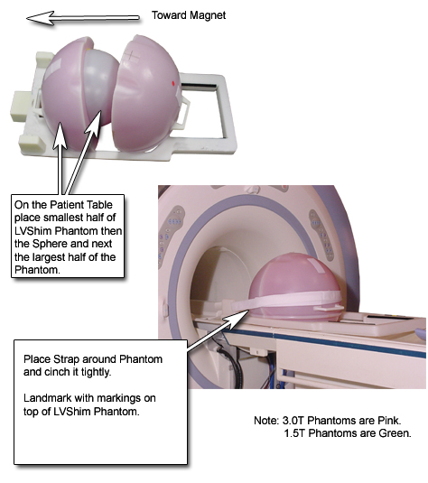

Gradient LVShim
Prerequisites
The goal of Gradient LVShim is to improve the shim over a 45-cm (Whole, BRM) or 40-cm (Zoom, CRM) Diameter Spherical Volume (DSV) using gradients only.
1 Phantom Setup
Procedure
- The preferred method for accessing the LVShim tool is through
the Calibration Wizard. The Restricted Service Key must be inserted.
To start LVShim tool:
- On the Service Desktop, start the Service Browser if not already running. From the Calibration menu, select LVShim and Click here to start this tool.
- Remove the Head Coil and any phantom from the cradle.
- Set up and align the LVShim Phantom per Figure 1.
Figure 1. Aligning LVShim Phantom on Patient Table

2 Gradient LVShim Scan Prescription
Procedure
- At the Host Computer, prepare the system for scanning as follows:
- Select New Pt.
- For ID, type: geservice, Enter.
- For Name, type: lvshim.
- For Weight (lb), type: 300, Enter.
- Set Patient Protocols to Service.
- At the front enclosure, press LANDMARK, then MOVE TO SCAN.
- Under Patient Protocols, select Service, then Other.
- Find and click on the Protocol for LVShim, then click on the Series to be used.
- Click Accept to download the Series.
- In Additional Parameters, click User CVs Screen.
In the User Control Variables window, enter the following:
-
For No. of Scan Planes: 6
-
For Bandwidth: 200 Hz
-
- Click Save Series.
- Click Auto Prescan. Make sure Transmit Gain (TG) is between 130 and 160, and record the Gradient Shim current value.
- Click Manual Prescan.
- While in the Center Freq. Fine (CFH) mode, center the frequency peak in the display as necessary. After locating the best signal, open the Frequency menu at the top of Manual Prescan window, and select Save Frequency to save the new center frequency.
- Click Transmit Gain (TG), open the Markers menu at the top of the Manual Prescan window, and select Horizontal Hairline. Adjust
TG for the highest value (should be between 130 to 160).note:
The TG needs to be adjusted correctly after performing Auto Prescan.
-
Auto Prescan sets the TG for this phantom too high. This results in the RF being over driven, and will produce NaN (Not a Number) in the LVShim analysis.
-
Typically, the TG will maximize at approximately 20 counts less than the Auto Prescan setting when adjusted in Manual Prescan.
-
- Select Scan TR (R1/R2). Verify that R1 and R2 are not outside of the range. Adjust R1 and R2 for approximately 50%.
- Click Done to exit the Manual Prescan.
- When finished with Manual Prescan, click Scan.note:
The annotation on the LVShim images is not correct, and does not change. The scan plane is driven by the LVShim PSD, not through scan prescription. Therefore, the software responsible for the image annotation does not know about the plane changes, and keeps the annotation at the first plane. The images are in the correct plane and orientation, but the annotation does not reflect this.
3 Gradient LVShim Analysis
Procedure
- At the Host Computer, open the Service Browser (if not already running) from the Service Desktop.
- Start the LVShim tool as shown in Figure 2.note:
For TwinSpeed, highlight WHOLE or ZOOM to match the coil currently being shimmed.
Figure 2. Starting LVShim Tool

- Focus on the LVShim tool main menu that displays (example shown
in Figure 3).
Figure 3. LVShim Main Menu

Change the following parameters to calculate the next set of currents while performing Main LVShim:
-
Shim Type should be set to Gradient. Type 1, Enter until the correct set is displayed.
-
Image Data should show the Exam, Series and the first Image number of the previously scanned LV Shim series. Type 2, Enter and change if necessary.
-
Operation Mode should be set to Service. Type 3 Enter until this is listed correctly.
-
Display Mag and Phase Diff Images should be set to No. Type 4 Enter until this is listed correctly.
-
The calibration file should list the correct configuration file to use. Type 5, Enter to view the file.
note:View detailed information on these files in LV Shim Software. Make sure the correct gradient mode is chosen if this system is a TwinSpeed.
-
The existing grad shim for each coil should match the grad shim set in each coil from the previous iteration (or the initial currents). Type 6Enter and modify the currents if necessary.
-
- Once the LVShim parameters above are set up correctly, type 0Enter to run the analysis.
- If image phase wrap was detected, the following message displays: Excessive phase wrapping….Please re-scan at Wider Bandwidth or smaller test diameter. If this occurs, return to Gradient LVShim Scan Prescription and rescan at a greater bandwidth.
- Check the output that opens in a C-shell. (See Figure 4 for an example.)note:
Bandwidth, Exam, Series and Image numbers will match the LV Shim series under analysis.
Figure 4. Example Output for LVShim Analysis Tool

- If NaN displays in the Harmonic Coefficient data, return to Gradient LVShim Scan Prescription, make sure the TG value is between 130 and 150 and rescan.
- Enter Comments as desired. Once comments are entered, the following
displays:
Coil Existing Delta New
X 1 -1 0
Y 0 0 0
Z 3 1 4
- Record this data on the appropriate Data Sheet.
- Compare this data to the appropriate LVShim specifications for the site's magnet. Keep iterating until no noticeable shim improvement is observed.
- If accepting the new grad shim values, type y, Enter.
- Return to Gradient LVShim Scan Prescription and rescan. (The new currents are automatically entered into the gradient amplifiers by the software.)
- Update the Data Sheets.
4 Finalization
Procedure
- Remove any phantoms and or tool used during LVShim.
- Perform a TPS Reset.
- Do a head or body test scan before turning the system over to the customer.